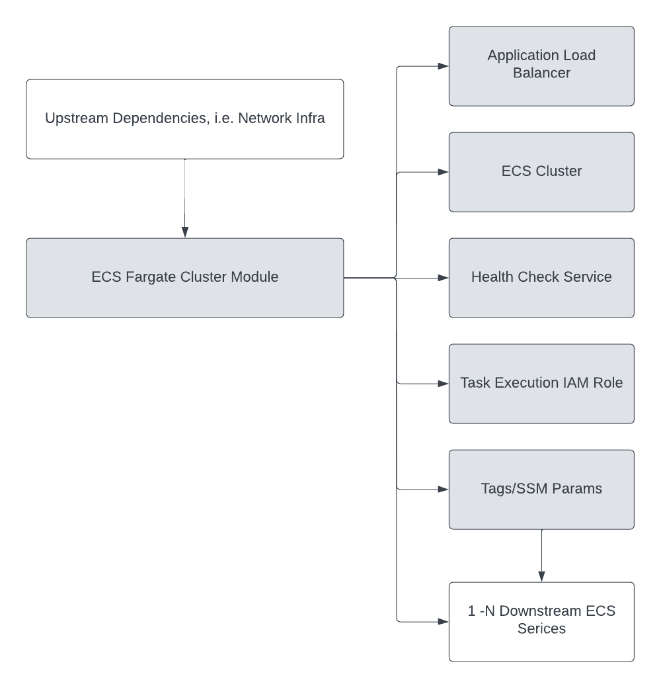

terraform-aws-ref-arch-ecs¶
Overview¶
Terraform Module for AWS ECS by the SourceFuse ARC team.
The module assumes that upstream dependencies, namely networking dependencies, are created upstream and the values are passed into this module via mechanisms such as Terraform data source queries.

The module provisions
- ECS Cluster - we are focusing on the Fargate launch type, so we do not provision any underlying EC2 instances for the ECS launch type.
- Application Load Balancer
- Health Check Service - vanilla Nginx service that is used as the default route for the load balancer. The purpose of the health check service is to ensure that the core infrastructure, networking, security groups, etc. are configured correctly.
- Task execution IAM role - used by downstream services for task execution.
- Tags/SSM params - the module tags resources and outputs SSM params that can be used in data source lookups downstream for ECS services to reference to deploy into the cluster.
Our approach to ECS Fargate clusters is to provision a cluster and allow downstream services to attach to it via convention based data source queries.
Usage¶
Requirements¶
| Name | Version |
|---|---|
| terraform | ~> 1.3 |
| aws | ~> 4.0 |
Providers¶
| Name | Version |
|---|---|
| aws | 4.57.1 |
Modules¶
| Name | Source | Version |
|---|---|---|
| acm | git::https://github.com/cloudposse/terraform-aws-acm-request-certificate | 0.17.0 |
| alb | ./modules/alb | n/a |
| alb_sg | git::https://github.com/cloudposse/terraform-aws-security-group | 2.0.0 |
| ecs | git::https://github.com/terraform-aws-modules/terraform-aws-ecs | v4.1.2 |
| health_check | ./modules/health-check | n/a |
Resources¶
| Name | Type |
|---|---|
| aws_cloudwatch_log_group.this | resource |
| aws_iam_policy.secrets_manager_read_policy | resource |
| aws_iam_policy_attachment.execution | resource |
| aws_iam_policy_attachment.secrets_manager_read | resource |
| aws_iam_role.execution | resource |
| aws_lb_listener.http | resource |
| aws_lb_listener.https | resource |
| aws_service_discovery_private_dns_namespace.this | resource |
| aws_ssm_parameter.this | resource |
| aws_iam_policy_document.assume | data source |
Inputs¶
| Name | Description | Type | Default | Required |
|---|---|---|---|---|
| access_logs_enabled | A boolean flag to enable/disable access_logs | bool |
true |
no |
| acm_domain_name | Domain name the ACM Certificate belongs to | string |
n/a | yes |
| acm_process_domain_validation_options | Flag to enable/disable processing of the record to add to the DNS zone to complete certificate validation | bool |
true |
no |
| acm_process_domain_validation_record_ttl | The TTL of the record to add to the DNS zone to complete certificate validation | string |
"300" |
no |
| acm_subject_alternative_names | Subject alternative names for the ACM Certificate | list(string) |
[] |
no |
| additional_ssm_params | Additional SSM Parameters you would like to add for your ECS configuration. The optional value defaults are: description = "Managed by Terraform" type = "SecureString" overwrite = true |
list(object({ |
[] |
no |
| alb_access_logs_s3_bucket_force_destroy | A boolean that indicates all objects should be deleted from the ALB access logs S3 bucket so that the bucket can be destroyed without error | bool |
false |
no |
| alb_access_logs_s3_bucket_force_destroy_enabled | When true, permits force_destroy to be set to true.This is an extra safety precaution to reduce the chance that Terraform will destroy and recreate your S3 bucket, causing COMPLETE LOSS OF ALL DATA even if it was stored in Glacier. WARNING: Upgrading this module from a version prior to 0.27.0 to this version will cause Terraform to delete your existing S3 bucket CAUSING COMPLETE DATA LOSS unless you follow the upgrade instructions on the Wiki here. See additional instructions for upgrading from v0.27.0 to v0.28.0 here. |
bool |
false |
no |
| alb_certificate_arn | ALB Certificate ARN. If var.create_acm_certificate is true, this will be ignored. |
string |
null |
no |
| alb_idle_timeout | The time that the connection is allowed to be idle. | number |
300 |
no |
| alb_internal | Determines if this load balancer is internally or externally facing. | bool |
false |
no |
| alb_ssl_policy | Load Balancer SSL policy. | string |
"ELBSecurityPolicy-FS-1-2-Res-2020-10" |
no |
| alb_subnet_ids | Subnet Ids assigned to the LB | list(string) |
n/a | yes |
| cluster_name_override | Name to assign the cluster. If null, the default will be namespace-environment-cluster |
string |
null |
no |
| create_acm_certificate | Create an ACM Certificate to use with the ALB | bool |
true |
no |
| environment | ID element. Usually used for region e.g. 'uw2', 'us-west-2', OR role 'prod', 'staging', 'dev', 'UAT' | string |
n/a | yes |
| execution_policy_attachment_arns | The ARNs of the policies you want to apply | list(string) |
[ |
no |
| health_check_route_53_private_zone | Used with name field to get a private Hosted Zone |
bool |
false |
no |
| health_check_route_53_records | List of Route 53 records for the health check service. | list(string) |
n/a | yes |
| health_check_subnet_ids | Subnet IDs for the health check tasks to run in. If not defined, this will use var.alb_subnet_ids. |
list(string) |
[] |
no |
| log_group_retention_days | Specifies the number of days you want to retain log events in the specified log group. Possible values are: 1, 3, 5, 7, 14, 30, 60, 90, 120, 150, 180, 365, 400, 545, 731, 1096, 1827, 2192, 2557, 2922, 3288, 3653, and 0. If you select 0, the events in the log group are always retained and never expire |
number |
30 |
no |
| log_group_skip_destroy | Set to true if you do not wish the log group (and any logs it may contain) to be deleted at destroy time, and instead just remove the log group from the Terraform state. | bool |
false |
no |
| namespace | Namespace your resource belongs to. Usually an abbreviation of your organization name, e.g. 'example' or 'arc', to help ensure generated IDs are globally unique" |
string |
n/a | yes |
| route_53_zone | Route 53 domain to generate an ACM request for and to create A records against, i.e. sfrefarch.com. A wildcard subject alternative name is generated with the certificate. | string |
n/a | yes |
| service_discovery_private_dns_namespace | The name of the namespace | list(string) |
[ |
no |
| tags | Tags to assign the resources. | map(string) |
{} |
no |
| vpc_id | Id of the VPC where the resources will live | string |
n/a | yes |
Outputs¶
| Name | Description |
|---|---|
| alb_arn | ARN to the ALB |
| alb_certificate_arn | ACM Certificate ARN |
| alb_dns_name | External DNS name to the ALB |
| cluster_arn | ECS Cluster ARN |
| cluster_id | ECS Cluster ID |
| cluster_name | ECS Cluster name |
| health_check_fqdn | Health check FQDN record created in Route 53. |
SSM Parameters¶
There are some commonly referenced outputs generated by this module.
These outputs are also published to SSM for ease of access for downstream resources.
The default SSM Parameter format used by this module is the following:
You can append to this array by adding values to var.additional_ssm_params.
Versioning¶
This project uses a .version file at the root of the repo which the pipeline reads from and does a git tag.
When you intend to commit to main, you will need to increment this version. Once the project is merged,
the pipeline will kick off and tag the latest git commit.
Development¶
Prerequisites¶
Configurations¶
- Configure pre-commit hooks
Tests¶
- Tests are available in
testdirectory - Configure the dependencies
- Now execute the test
Authors¶
This project is authored by: - SourceFuse